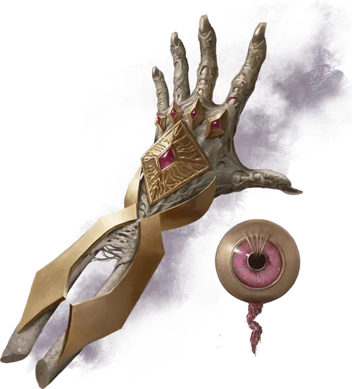

Глаз и рука Векны
Eye and Hand of Vecna
Чудесный предмет, артефакт (требуется настройка)

Векна был могущественным волшебником, магией и завоеваниями основавший ужасную империю. Несмотря на всю свою силу, Векна боялся смерти и решил избежать её, став личем.
Взбунтовавшийся подчинённый Векны по имени Кас положил конец правлению лича в жестокой битве. От Векны остались лишь одна рука и один глаз — ужасающие артефакты, которые по-прежнему стремятся воплотить его волю в мире.
Глаз Векны и Рука Векны — отдельные артефакты, которые могут быть найдены как вместе, так и по отдельности. Глаз похож на налитый кровью обычный глаз, вырванный из глазницы. Рука — иссохшая левая конечность.
Случайные свойства Глаза и Руки. У Глаза Векны есть следующие случайные свойства:
1 малое положительное свойство
1 основное положительное свойство
1 малое отрицательное свойство
У Руки Векны есть следующие случайные свойства:
1 малое положительное свойство
1 основное положительное свойство
1 малое отрицательное свойство
Настройка на Глаз. Чтобы настроиться на Глаз, вы должны вдавить его в собственную пустую глазницу. Глаз прирастает к вашей голове и остаётся там до вашей смерти. Если Глаз будет вынут, вы умрёте.
Свойства Глаза. Пока вы настроены на Глаз, ваше мировоззрение становится Нейтральным Злым, и вы получаете следующие преимущества:
Истинное зрение. Вы обладаете Истинным зрением дальностью 240 футов.
Проникающее зрение. Действием Магия вы можете получить проникающее зрение дальностью 30 футов на 1 минуту.Для вас непрозрачные объекты в пределах дальности выглядят прозрачными и не блокируют лучи света. Это зрение проникает сквозь 1 фут камня, 1 дюйм обычного металла или 3 фута дерева или земли; это зрение не может проникнуть через бо́льшую толщину или даже тонкий слой свинца.
Сотворение заклинаний. Глаз имеет 8 зарядов и восстанавливает 1к4+4 потраченных зарядов на каждом рассвете. Вы можете сотворять с помощью глаза заклинания из таблицы Заклинания Глаза Векны (Сл спасброска 18). В таблице указано, сколько зарядов нужно потратить для сотворения заклинания. Каждый раз, когда вы сотворяете заклинание с помощью Глаза, с шансом 5% Векна вырывает вашу душу из тела, поглощает её и берёт под контроль ваше тело, как марионетку. В таком случае вы становитесь НИП под контролем Мастера.
Заклинания Глаза Векны
| Заклинание | Затрачиваемые заряды |
| Дезинтеграция | 4 |
| Корона безумия | 1 |
| Наблюдение | 2 |
| Подчинение монстра | 5 |
| Разящее око | 4 |
Настройка на Руку. Чтобы настроиться на Руку, вы должны прижать её к обрубку, где раньше была ваша левая рука. Рука прирастает к вашему плечу и становится полноценной конечностью. Если Рука будет отнята, вы умрёте.
Свойства Руки. Когда вы настроены на Руку, ваше мировоззрение становится Нейтральным Злым, и вы получаете следующие преимущества:
Великая сила. Ваша значение Силы становится равно 20, если оно меньше 20.
Ледяное касание. Рукопашные атаки заклинанием, совершаемые этой рукой, как и рукопашные атаки, совершаемые с оружием, удерживаемым в этой руке, наносят при попадании 2к8 дополнительного урона Холодом.
Сотворение заклинаний. Рука имеет 8 зарядов и восстанавливает 1к4+4 потраченных зарядов на каждом рассвете. Вы можете сотворять с помощью руки заклинания из таблицы Заклинания Руки Векны (Сл спасброска 18). В таблице указано, сколько зарядов нужно потратить для сотворения заклинания. Каждый раз, когда вы сотворяете заклинание с помощью Руки, та сотворяет на вас заклинание Внушение (Сл спасброска 18; Концентрация не требуется), требуя, чтобы вы совершили злое деяние. Рука может как поручить вам конкретное действие, так и оставить выбор за вами.
Заклинания Руки Векны
| Заклинание | Стоимость зарядов |
| Замедление | 2 |
| Перст смерти | 5 |
| Усыпление | 1 |
| Телепортация | 3 |
Свойства Глаза и Руки вместе. Когда вы настроены одновременно и на Глаз, и на Руку, вы получаете следующие дополнительные преимущества:
Чувство опасности. Вы совершаете с Преимуществом броски Инициативы.
Некротическое сжатие. Действием Магия вы можете выбрать одно существо, видимое вами в пределах 5 футов от вас. Цель должна пройти спасбросок Телосложения Сл 18, при провале получая 7к6 Некротического урона, а при успехе — половину этого урона. Если Хиты существа снижены этим уроном до 0, оно превращается в зелёную слизь (см. Опасности), покрывающую пространство, в котором находилось; каждый 5-футовый квадрат слизи считается отдельной частью. Немагические объекты, которые носило или несло существо, уничтожаются слизью, если состоят из металла или органических материалов.
Иммунитет к ядам. Вы обладаете Иммунитетом к урону от Яда и состоянию Отравленный.
Регенерация. Если в начале вашего хода у вас есть хотя бы 1 Хит, вы восстанавливаете 1к10 Хитов.
Желание. Вы можете сотворить заклинание Желание. После использования этого свойства оно не может быть использовано снова до истечения 30 дней.
Уничтожение Глаза и Руки. Если и Глаз Векны, и Рука Векны прикреплены к одному существу, и это существо убито Мечом Каса, оба артефакта Векны вспыхивают огнём, превращаются в пепел и уничтожаются. Любые другие попытки уничтожить Глаз или Руку кажутся успешными, но артефакт вновь появляется в одном из тайных хранилищ Векны, где он ждёт, пока его снова найдут.